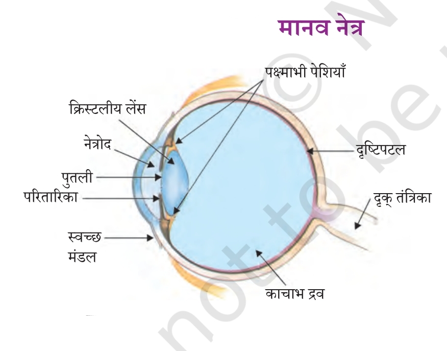
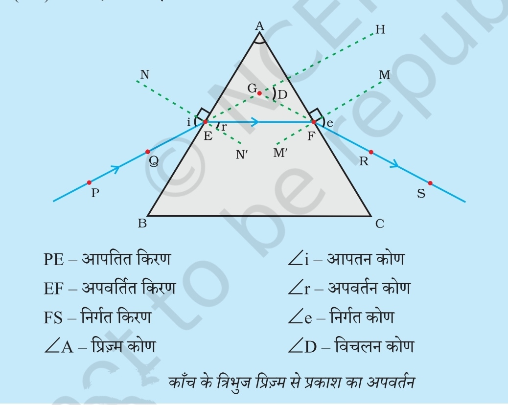
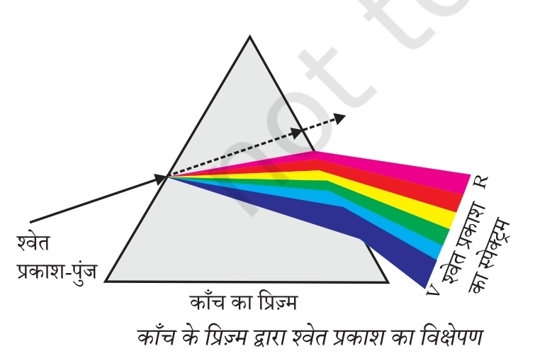
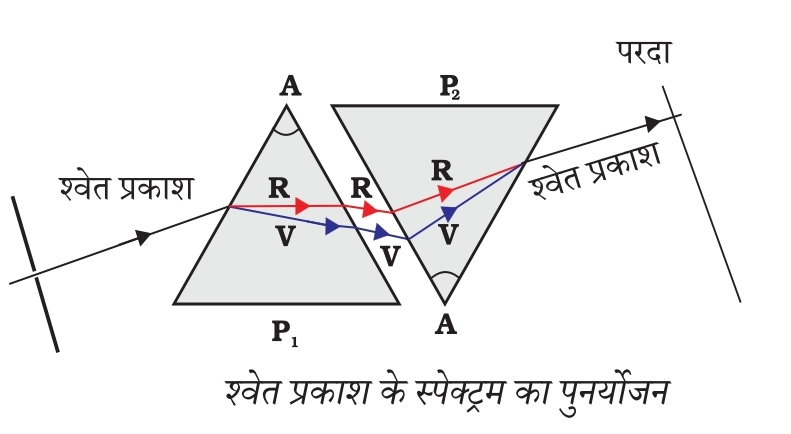

मानव नेत्र तथा रंगबिरंगा संसार




| प्रतीक | अर्थ |
|---|---|
| PE | आपतित किरण |
| EF | अपवर्तित किरण |
| FS | निर्गत किरण |
| ∠A | प्रिज्म कोण |
| ∠i | आपतन कोण |
| ∠r | अपवर्तन कोण |
| ∠e | निर्गत कोण |
| ∠D | विचलन कोण |
| विषय | मुख्य बिंदु |
|---|---|
| मानव नेत्र | प्रतिबिंब रेटीना पर बनता है। |
| न्यूनतम स्पष्ट दृष्टि दूरी | 25 cm |
| निकट-दृष्टि दोष (Myopia) | अवतल लेंस (Concave Lens) |
| दीर्घ-दृष्टि दोष (Hypermetropia) | उत्तल लेंस (Convex Lens) |
| जरा-दूरदृष्टिता (Presbyopia) | द्विफोकसी लेंस (Bifocal Lens) |
| श्वेत प्रकाश का विभाजन | विक्षेपण (Dispersion) |
| स्पेक्ट्रम | VIBGYOR |
| तारों का टिमटिमाना | वायुमंडलीय अपवर्तन |
| आकाश का नीला रंग | प्रकाश का प्रकीर्णन |
| खतरे का संकेत | लाल रंग |